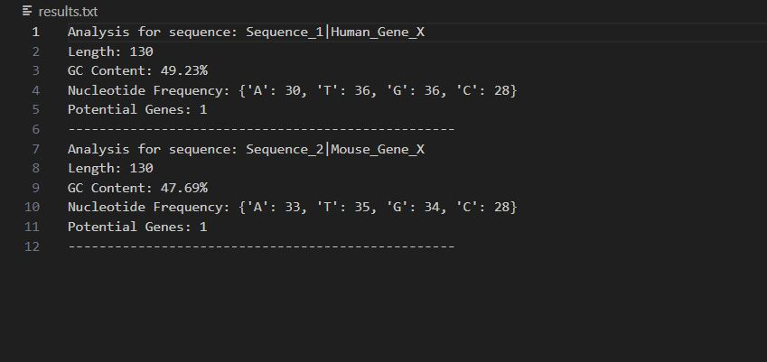

DNA Sequence Analyzer
A robust Python-based bioinformatics tool for comprehensive DNA sequence analysis and manipulation, featuring advanced pattern recognition and gene detection capabilities.
Technologies Used
Python 3.8+
pytest
FASTA
CLI
Results

Features
- GC Content Analysis: Precise calculation of GC content percentage in DNA sequences
- Nucleotide Distribution: Detailed analysis of nucleotide frequencies
- Pattern Recognition: Advanced motif finding with position reporting
- Sequence Manipulation: Generate complement and reverse complement sequences
- Gene Detection: Identify potential coding regions using start/stop codons
- FASTA Support: Full compatibility with standard FASTA file format
Implementation
Project Structure
dna_analyzer/
├── src/
│ ├── sequence_analyzer.py
│ ├── utils.py
│ └── main.py
├── tests/
│ └── test_analyzer.py
├── data/
│ ├── example1.fasta
│ └── example2.fasta
└── docs/Usage Example
# Basic Analysis
python src/main.py -i data/example1.fasta -o results.txt -a
# Motif Search
python src/main.py -i data/example2.fasta -m ATCG -o motif_results.txtTechnical Highlights
- Modular architecture for easy extension and maintenance
- Comprehensive test coverage using pytest
- Efficient sequence processing algorithms
- Command-line interface for automated analysis
- Support for multiple input sequence formats
Resources
 GitHub Repository
GitHub Repository
License
This project is licensed under the MIT License. See the LICENSE file for details.